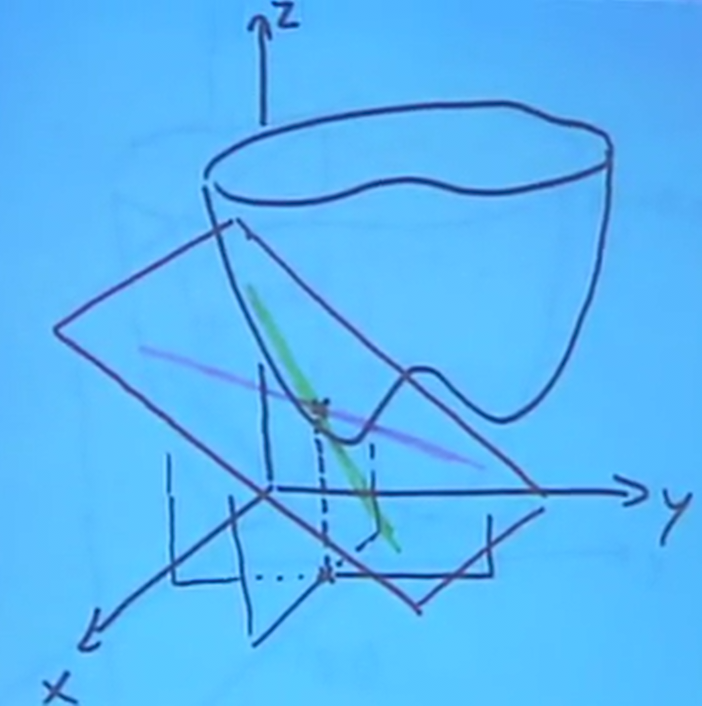
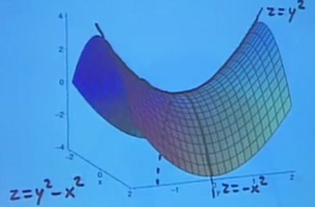

Min/Max Problems
Table of Contents
1. Linear Approximations
Just like with one variable, we can also do linear approximations on two or more variables. If we change \(x\) by a small amount \(\Delta x\), and \(y\) by a small amount \(\Delta y\), then we can say that if \(z=f(x,y)\):
\[ \Delta z \approx f_x \Delta x + f_y \Delta y \]
The intuition for this is that the effects add up. By changing \(x\) by a small amount, and then changing \(y\) by a small amount, those changes to \(z\) add up to give us this formula. This is known as a linear approximation because the partial derivatives are representations of tangent lines:

As you can see, when we combine the two tangent lines from each of our partial derivatives, they form a tangent plane. The linear approximation assumes that for small changes, the graph of our function is approximately equal to this tangent plane.
We can also find what exactly this tangent plane's equation is. First, we can find equations that describe the tangent lines created by the two partial derivatives. We shall assume that \(\frac{\partial f}{\partial x}(x_0,y_0) = a\) and \(\frac{\partial f}{\partial y}(x_0,y_0) = b\).
For the partial derivative with respect to \(x\), this tells us the slope of the tangent line as \(y\) is held constant. The tangent line's independent variable is \(x\), while its dependent variable is \(z\), and its slope is \(a\). Finally, we know that the point \((x_0,z_0)\) is on the line. Therefore, we can say that:
\[ L_1 = \begin{cases} z = z_0 + a(x-x_0) \\ y = y_0 \end{cases} \]
Similarly for the second tangent line:
\[ L_2 = \begin{cases} z = z_0 + a(y-y_0) \\ x = x_0 \end{cases} \]
Since these equations are when the variables \(y\) and \(x\) are held constant, they can be seen as independent of each other. Together, these two lines determine a plane, which is given by:
\[ z = z_0 + a(x-x_0) + b(y-y_0) \]
2. Min/Max Problems
The first observation we shall make is that at a local minimum or maximum, \(f_x=0\) and \(f_y=0\). This can be seen as because if either partial derivative is not 0, then you can still move in that direction to obtain a value that is either greater than or less than the current value, thus making it not a minimum of maximum.
More generally, we call \((x_0,y_0)\) to be a critical point of \(f\) if \(f_x(x_0,y_0)=0\) and \(f_y(x_0,y_0)=0\). To find these critical points, we can take the partial derivatives, set their results to zero, and solve their resulting system of equations for the points.
2.1. Saddle Point
It is interesting to note that in three dimensions, there could be a case where a critical point is neither a local min or a local max. This is known as a saddle point (so-called because it looks like a saddle, see below), where moving along one direction would be a local minimum, yet moving along the other direction would be a local maximum:

2.2. Second Derivative Test
Once we find the critical points, however, we still have no way of telling if it is a local minimum, a local maximum, or a saddle point. In addition, we would also like to know the global minimum and maximum.
Note that the global min and max doesn't have to be at a critical point: it can also be at a boundary value, either of the domain or at infinity.
To find the type of critical point we have, we use what is known as the second derivative test.
2.2.1. Special Case
We will use the quadratic function \(w=ax^2 + bxy + cy^2\), where \(a \neq 0\), for intuition. First, we complete the square:
\begin{aligned} w &= a(x^2 + \frac{b}{a}xy) + cy^2 \\ w &= a(x + \frac{b}{2a}y)^2 + (c - \frac{b^2}{4a})y^2 \\ w &= \frac{1}{4a} \left [ 4a^2(x+\frac{b}{2a}y)^2 + (4ac - b^2)y^2 \right ] \end{aligned}Since \(4a^2(x+\frac{b}{2a}y)^2\) is all composed of squares, this term will always be positive. Therefore, there are three cases, depending on the sign of \(4ac-b^2\).
First, when \(4ac-b^2 < 0\), there is a saddle point. This is because \(w\) is not necessarily all negative or all positive from the critical point, which is the key characteristic of a saddle point.
Second, when \(4ac-b^2 = 0\), we have what's called a degenerate critical point, because there is one direction in which nothing happens (when \(x+\frac{b}{2a}y\) is constant). In more complicated functions, we will be unable to tell what happens exactly around this critical point.
Finally, when \(4ac-b^2 > 0\), this means we have a sum of two squares. This means that everything within the brackets is positive, and therefore the overall sign of the function \(w\) depends solely on the sign of \(a\). In this case, if \(a > 0\), \(w\) is always positive, and therefore we have a minimum. Otherwise, if \(a < 0\), \(w\) is always negative, and therefore we have a maximum.
Notice that this looks very much like the discriminant of the quadratic formula. Indeed, we can reach the same intuition using the quadratic formula. Instead of completing the square, we can factor out \(y^2\) to get:
\[ w=y^2 \left[a \left( \frac{x}{y} \right ) ^2 + b \left ( \frac{x}{y} \right ) + c \right] \]
The term inside the brackets is a quadratic equation, with variable \(\frac{x}{y}\). Thus, if \(b^2-4ac>0\) (or \(4ac-b^2 < 0\)), this means this equation has roots, and therefore can take both positive and negative values, which again leads us to a saddle point. Otherwise, if \(b^2-4ac<0\), this means that the equation never has a root (never takes the value zero), which means it is either always positive or always negative, depending on the sign of \(a\).
2.2.2. General Case
In general, we look at the second partial derivative. At a critical point \((x_0,y_0)\) of a function \(f\), the second derivative test says that if:
\begin{aligned} A &= f_{xx}(x_0,y_0) \\ B &= f_{xy}(x_0,y_0) \\ C &= f_{yy}(x_0,y_0) \end{aligned}Note that \(f_{xy}=f_{yx}\). Now, we look at \(AC-B^2\):
- if \(AC-B^2 > 0\) and \(A > 0\), local minimum
- if \(AC-B^2 > 0\) and \(A < 0\), local maximum
- if \(AC-B^2 < 0\), saddle point
- if \(AC-B^2 = 0\), inconclusive
2.2.3. Intuition to General Case
The intuition here lies in Taylor approximations. Notice that our linear approximation is simply the first-order terms of a Taylor approximation; however, at a critical point, the first-order derivatives are zero. Therefore, we need to add in the second-derivative terms to be more accurate:
\[ \Delta f_\text{crit} \approx \frac{1}{2}f_{xx} (x-x_0)^2 + f_{xy}(x-x_0)(y-y_0) + \frac{1}{2}f_{yy}(y-y_0)^2 \]
Suddenly, realize that this approximation is exactly the same as our special case: this shows that our general case can be reduced to our special case. Realize that here, \(\frac{1}{2}A = a\), \(B = b\), and \(\frac{1}{2}C = c\) (this also explains why the 4 is dropped in our general case).
3. Least-Squares Interpolation
Oftentimes in scientific research, a set of discrete data points is collected and plotted, and we want to obtain a line of best fit through those points, \(y=ax+b\). In other words, we want to solve for the unknowns \(a\) and \(b\).
In order to do this, we will have to come up with a definition of what "best" means: how we want to minimize the deviations between each data point and our line of best fit (deviations being the vertical distances). There are many possible answers, but the most universally accepted one is that we want to minimize the sum of the squares of the deviations: this is least-squares interpolation.
Now, given each of our data points \((x_i,y_i)\), using our definition of "best" we can set up the following function to minimize:
\[ D(a,b) = \sum (y_i - (ax_i + b))^2 \]
To find the critical point \((a,b)\) where it is at the minimum, we take the partial derivatives:
\begin{aligned} \frac{\partial D}{\partial a} &= \sum 2(y_i - (ax_i+b))(-x_i) = 0 \\ \frac{\partial D}{\partial b} &= \sum 2(y_i - (ax_i+b))(-1) = 0 \end{aligned}Simplifying,
\begin{aligned} \frac{\partial D}{\partial a} &= \sum (x_i^2a + x_ib - x_iy_i) = 0 \\ \frac{\partial D}{\partial b} &= \sum (x_ia + b - y_i) = 0 \end{aligned}We can rewrite this as:
\begin{aligned} \left(\sum x_i^2\right)a + \left(\sum x_i\right)b &= \sum (x_iy_i) \\ \left(\sum x_i\right)a + nb &= \sum(y_i) \end{aligned}Realize that once you plug in all of the data points as numbers, this comes out to be a 2x2 linear system, which we can solve for \((a,b)\).